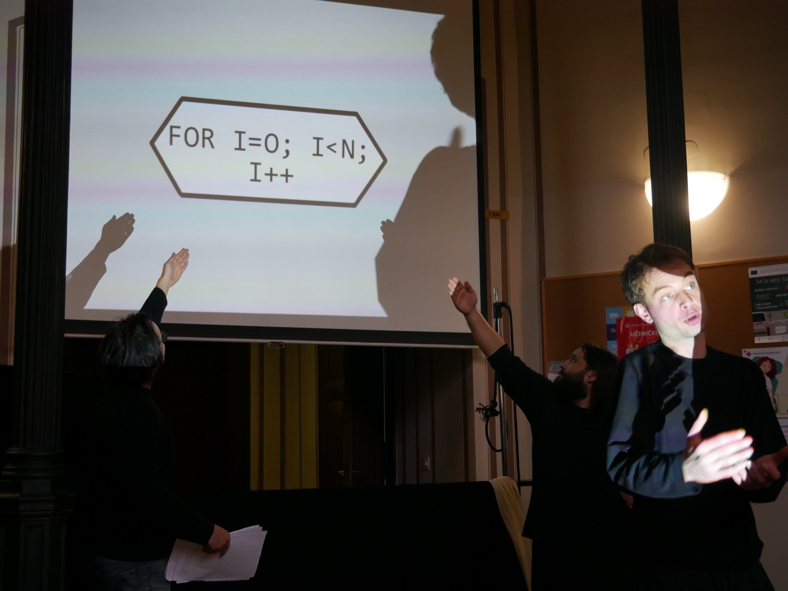
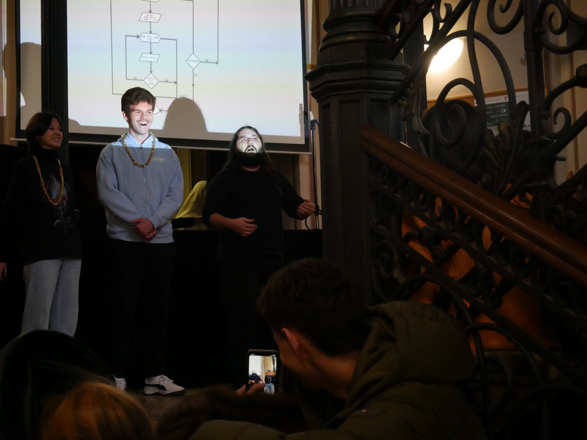

Inovativni program
Predstava i radionica programiranja nadopunjuju se u cjelini — od kazališnog doživljaja do rada s robotima.
Algoritmi i roboti u umjetnosti
Projekt koji spaja kazališnu predstavu o algoritmima i Romeo i Juliji s edukativnom radionicom programiranja i robotike.

Inovativni program spaja kazalište i tehnologiju kroz predstavu i radionicu koji se međusobno nadopunjuju. U središtu je predstava Algoritmija, na koju se nadovezuju metodička preporuka, anketno ispitivanje, razgovor s profesionalcima i praktična radionica.
Kazalište i tehnologija ovdje se spajaju kako bi se potaknula motivacija učenika za razvoj analitičkog rasuđivanja te kritičkog i kreativnog mišljenja. Projekt se provodi u suradnji Teatra to go i Osijek Software Citya.
Predstava i radionica programiranja nadopunjuju se u cjelini — od kazališnog doživljaja do rada s robotima.
Teatar to go registriran je u Očevidnik kazališta Ministarstva kulture i medija. Od osnutka (2014.) okupljamo profesionalne glumce, producente i stručne suradnike.
Gostovali smo s predstavama u preko 100 mjesta i gradova u Hrvatskoj i inozemstvu. U 2024. Teatar to go obilježio je deset godina djelovanja u okviru kazališta i filma.

Skupina entuzijasta kreira algoritam Romea i Julije da pomoću sonde Svemircima pošalje upute kako da sami po svojoj prirodi naprave predstavu Romeo i Julija te na taj način dožive katarzu i bezuvjetnu ljubav — ono što ljudi smatraju najvećim vrlinama čovječanstva.

Predstava se bavi prepoznavanjem prirode kreiranja algoritama u stvarnim događajima izvan računala. Radnja se odvija oko izrade algoritma za scenu iz drame Romeo i Julija. Protagonisti, želeći osuvremeniti kazalište, pokušavaju kreirati algoritam tragedije, ali kroz pokušaje i pogreške nastaju algoritmi apsurda, melodrame i komedije.
Publika dobiva uvid u to kako bi scena zaljubljivanja Romea i Julije izgledala kada bi algoritam bio manjkav ili pogrešno napisan. U završnoj sceni, nakon usklađivanja dramskih događaja s algoritmom i uz uključivanje publike, izvodi se scena Ljubav na prvi pogled.
Algoritmija spaja princip kazališta i tehnologije te obrađuje prirodu algoritma kroz uzročno-posljedični tijek događaja — „radnjom, a ne pripovijedanjem“ (Aristotel). Predstava prihvaća tehnološku okolinu tako da raščlanjuje kazalište putem algoritma i algoritam putem kazališta.
Nakon odgledane predstave polaznici radionice kroz programiranje postavljaju dio predstave uz pomoć dva robota opremljena ljudskim izrazima lica i zvukom.
Radionica ima za cilj omogućiti sudionicima praktično iskustvo u programiranju, dok istovremeno istražuju i učvršćuju koncept algoritama i njihovu ključnu ulogu u svakodnevnom životu.
Kroz ovu interaktivnu aktivnost polaznici ne samo da unapređuju svoje tehničke vještine, već i razvijaju dublje razumijevanje kako tehnologija može interpretirati i prenijeti složene ideje kroz umjetnički izraz.
Voditelji: studenti Filozofskog fakulteta Osijek, Studij informatologije
Nositelj aktivnosti: Osijek Software City
Praktično iskustvo programiranja uz učvršćivanje koncepta algoritama u svakodnevnom životu.
Tehnologija postaje alat za interpretaciju i prijenos složenih ideja kroz umjetnički izraz.
Programiranje, robotika i scenski izraz kroz timski rad.
Pristup koji spaja humanističke i tehničke discipline.
Od predstave i pripreme do javne prezentacije rada.
Sudionici odgledaju predstavu Algoritmija — kazališnu izvedbu o izradi algoritma za scenu iz Romeo i Julije — te se kroz razgovor s profesionalcima pripremaju za radionicu.
Polaznici koriste robote s izrazima lica i zvukom te programiraju dio predstave — rekreiraju scenu uz LEGO Education robote.
Sudionici prezentiraju radove publici i demonstriraju rekreiranu scenu.
Organizatori programa